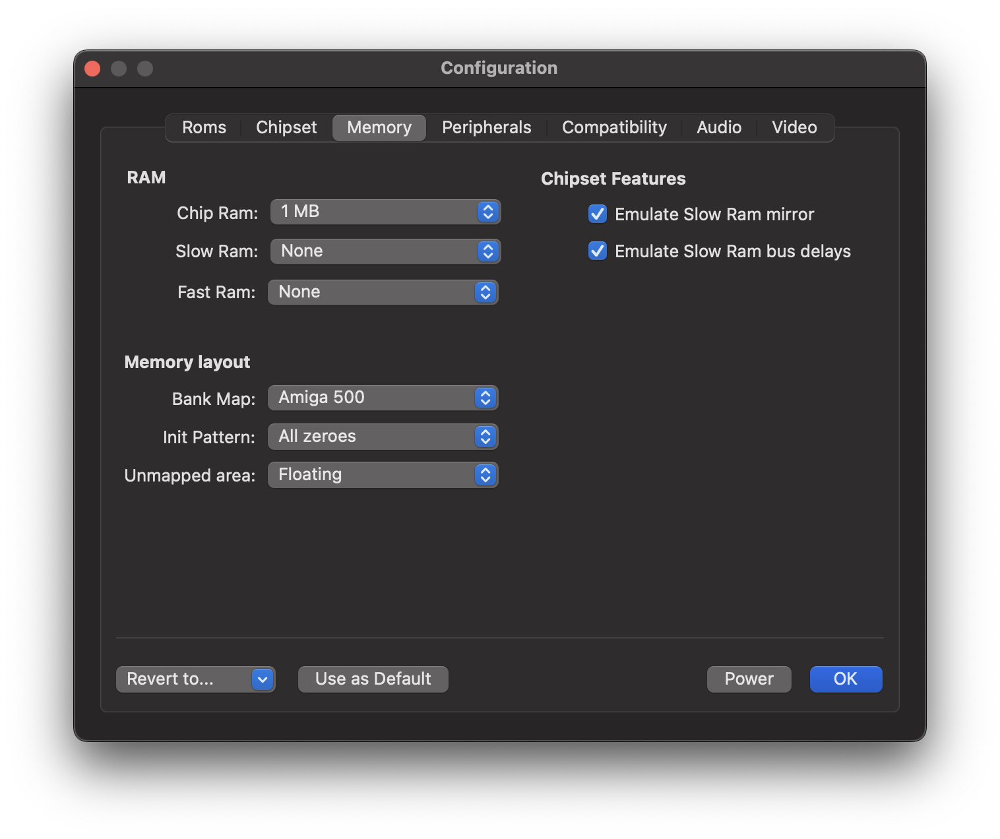

Memory Panel¶
Use this panel to configure the memory configuration and basic access properties.

Ram¶
The Amiga distinguishes three types of random access memories:
Chip RAM
Chip RAM refers to the factory-installed memory that is located on the motherboard. It is the most flexible RAM, as it can be accessed by both the CPU and the custom chipset. The Amiga 1000 had a limited amount of 256 KB on board, which could be expanded with a 256 KB RAM module plugged into an expansion slot which was located on the front of the computer case. The Amiga 500, which was released later, was shipped with 512 KB straight from the factory. The Amiga 2000 was released in different versions over time. The original Amiga 2000 shipped with 512 KB, just like the Amiga 500 did. Later versions were equipped with 1 MB.
Slow RAM
The Amiga supports two types of RAM extensions. The first type is called Slow RAM or Ranger RAM. In the Amiga 500 case, Slow RAM is added by inserting a memory expansion card into the trapdoor slot at the bottom of the computer case.
Slow RAM has a somewhat bad reputation because it combines the disadvantages of two worlds. First, it cannot be accessed by the custom chips, as a result, it cannot be used for any data that is processed directly by the Blitter or Copper. Second, it uses the same memory bus as the Chip RAM; this means that Slow RAM cannot be accessed during DMA cycles, even though the RAM itself is not accessible via DMA.
Fast RAM
Fast RAM is the third type of RAM expansion. This type of RAM is directly connected to the CPU, which means that it is not accessible to the custom chips, just like Slow RAM isn’t. However, since Fast RAM is not connected to the Chip RAM bus, the CPU can access this memory type in parallel to DMA activity. This is where the name Fast RAM stems from. The memory accesses themselves are not accelerated compared to Chip RAM or Slow RAM.
The default setting is 0 KB, because some Amiga programs refuse to work when Fast RAM is present.
Since 512 KB of Chip RAM was very little and Fast RAM was very expensive, 512 KB of Chip RAM and 512 KB of Slow RAM was a common memory configuration at the time. Only a few users owned a Fast RAM memory expansion due to its high price.
Memory layout¶
Bank map
The original Amigas use a 24-bit address bus, which means that they are capable of addressing 16 MB of memory. We can think of this memory as being divided into chunks of 64 KB, which we refer to as memory banks. The bank map determines where specific components are mapped at or mirrored to. For example, Chip RAM always starts at address $000000, while Slow RAM usually shows up at address $C00000. Mirroring means that we can access the same location, such as the register for setting the background color, through several different addresses. Thus a programmer could just as easily use an address from the mirrored range instead of the officially documented address, and many programmers have done so in the past. Unfortunately, the mirrored ranges are not the same in all Amiga models, which means that we have to tell the emulator which memory layout should be used. This is the purpose of this configuration option.
vAmiga supports four different bank maps: A500, A1000, A2000A, and A2000B. The bank maps mainly differ in the memory location of the RTC register space. In the first Amigas, namely the A1000 and the A2000A, the real-time clock was accessed through memory bank $D8. In the A500 and the most common A2000 model, the A2000B, Commodore mapped the real-time clock into memory bank $DC.
Other differences are related to mirroring. For example, the official location of the custom register space is memory bank $DF. However, this bank is usually mirrored multiple times, which means that the custom registers can also be accessed via other memory addresses. E.g., on older Amigas, the custom register space is mirrored in bank $DC, which is the same bank where later Amigas map in the real-time clock.
Init Pattern
This configuration option determines how the memory should be initialized at startup. You can choose between random values, all zeros or all ones.
Unmapped area
This option tells vAmiga what to put on the data bus when an unmapped memory location is accessed. Besides telling the emulator to leave the data bus in a floating state, you can choose to return all zeros or all ones. The first option is close to what happens in a real Amiga, but the current implementation is not 100% accurate. Any advice on how to improve emulation accuracy is very welcome.
Chipset features¶
Emulate Slow RAM Mirror
The ECS variants of Agnus have an interesting capability that the OCS variants do not. When an ECS Agnus is connected to 512 KB of Chip RAM and 512 KB of Slow RAM, it mirrors the Slow RAM pages into the second Chip RAM segment, making Slow RAM accessible for DMA. Now, the Blitter and Copper have full access to both RAMs. Move Any Mountain by Lazy Bones is an Amiga demo that relies on this feature. It was presented at the POLARIS computer party in 1993 and does not work when an OCS Agnus or an incompatible memory configuration is used.
This configuration option allows the user to enable or disable this feature. If an OCS Agnus is emulated or if the selected memory configuration does not match the 512 KB of Chip RAM + 512 KB of Slow RAM configuration, the selection has no effect. No mirroring will take place.
Emulate Slow RAM Bus delays
As mentioned before, the CPU needs a free DMA cycle to access Slow RAM. By default, vAmiga emulates this behavior. Disabling this option removes this restriction, allowing the CPU to access Slow RAM at the same pace as Fast RAM. Please note that accelerating Slow RAM accesses may cause incompatibilities in rare occasions, as the emulated behavior now deviates from what we see on the real machine.